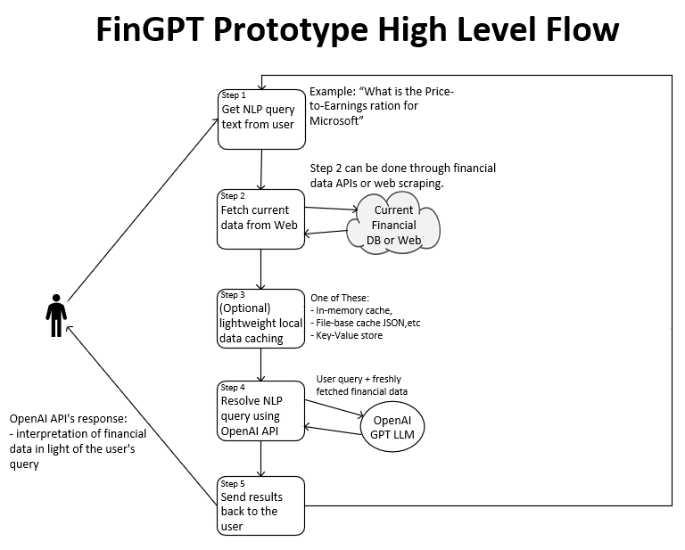

FinGPT Dev Plan:
- Technical Environment Setup: Configure local PC desktop
to commincate with OpenAI APIs.
- Feature Development: Identify the key features that would be most valuable for stock market analysis. This could include trend prediction, sentiment analysis of market news, generating summaries of financial reports, etc.
- Feature 1: Natural language input will be used to direct the
application. Utilizing natural language input allows users to interact with the application in a conversational manner, making it more accessible and user-friendly.
- Feature 2: The application will use GPT-3 or GPT-4 LLM. The decision to use GPT-3 or GPT-4 underscores a commitment to leveraging state-of-the-art language models for generating insights, which should enhance the quality and relevance of the analyses provided
- Feature 3: The application will query the internet and world wide
web when needed to read stock anaysis stored in public databases and in
corporate web sites. Enabling the application to query the internet and access public databases and corporate websites for stock analysis ensures that FinGPT can provide up-to-date information and comprehensive market insights.
- Requirements:
- Req 1: Parse the Input Query: Given the following NLP input, query the internet for an answer:
For example, "What is the price to earning ration for Microsoft?"
- Req 2: Intent Recognition: Recognize the intent behind the query, which is to find financial ratios for a specific company.
- Req 3
- Dataset Preparation: Collect and curate datasets relevant to your features. For equity analysis, this could include historical price data, financial statements, analyst ratings, and more.
- Model Training and Fine-Tuning: Use the datasets to train or fine-tune GPT models to understand and generate insights specific to financial contexts.
- Interface Design: Design an intuitive interface for users to interact with FinGPT. Whether it's a command-line tool, a web application, or an API, the ease of use will be critical for adoption.
- Testing and Validation: Rigorously test FinGPT to ensure its analyses are accurate and reliable. Consider the ethical implications of providing financial advice and ensure you comply with relevant regulations.
- Documentation: Create comprehensive documentation on how to use FinGPT, including examples and use cases.
- Feedback Loop: Establish a process for users to provide feedback on FinGPT's analysis to continuously improve its accuracy and usefulness.
- Security and Privacy: Ensure that your tool handles user data securely, especially if you'll be dealing with sensitive financial information.
- Compliance and Ethics: Stay informed about financial regulations and ethical guidelines to ensure that FinGPT complies with all legal requirements, especially if it provides or could be interpreted as providing investment advice.
FinGPT Prototype Flow:
Here's an overview of the updated prototype steps:
- Get natural language query from the user. Example What is the
Price-to-Earnings ratio for Microsoft?
- Fetch current data from Web: The system retrieves the latest financial data from the internet using APIs or scraping techniques.
- (Optional) Lightweight local data caching: An optional step where the system may cache the retrieved data locally to improve performance and reduce the need for repeated data fetching.
- Resolve NLP query using OpenAI API: The system sends the user's query and the retrieved financial data to the OpenAI API, which processes the query using the GPT LLM model.
- Send results back to the user: Finally, the system presents the OpenAI API's response to the user.
